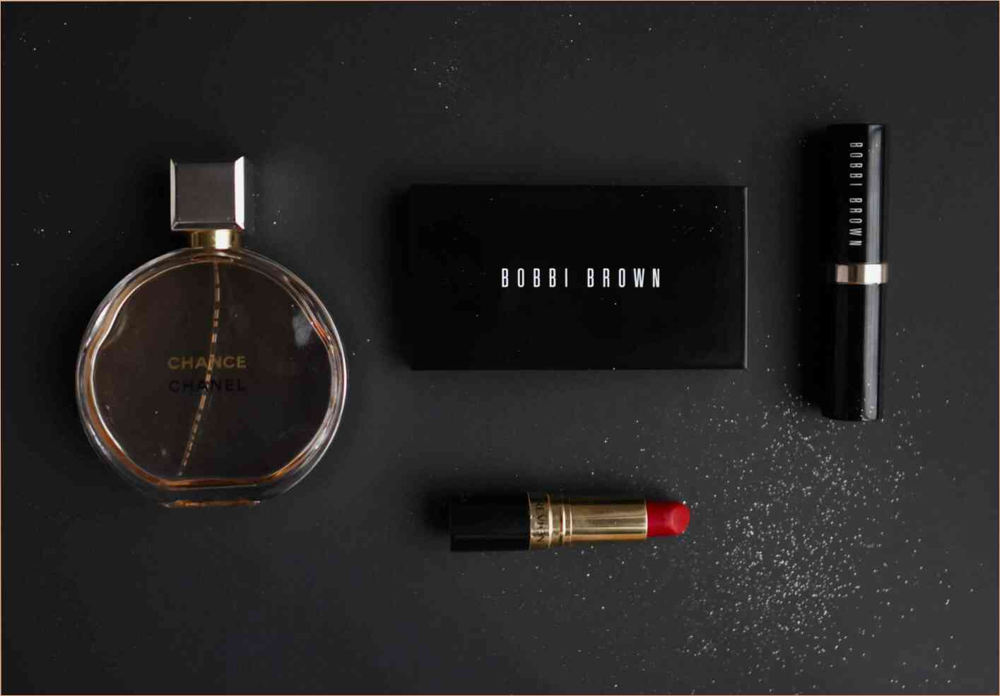

Dieta giustamente considerati il modo più semplice per perdere peso. Per questo non ha bisogno di investimenti finanziari o sport di carico, solo la motivazione e il rispetto delle regole di alimentazione. Il principale fattore di efficienza di qualsiasi dieta - la sua coerenza. Tuttavia, anche se rispetto a questo punto, se la dieta è costruito correttamente, quindi la sua efficacia può essere pari a zero, e poi andare in negativo - se i chili tornano dopo la dieta è completata.
Nonostante la varietà di sistemi di alimentazione, l'uso di molti di loro non è stata dimostrata. Alcuni possono portare un vero e proprio danno, che non può essere paragonato con diversi chili di troppo. Il caso più comune - quando dopo il ritorno alla normale modalità di alimentazione, il peso ritorna "con gli interessi".
Questo deriva dal fatto che il corpo comincia in modalità di emergenza, l'immagazzinamento di calorie, paura di ripetere limiti. Per evitare questo, quando si sceglie una dieta è necessario consultare un nutrizionista per la composizione ottimale il contenuto calorico di un piano di alimentazione. Se la differenza di calorie non è, allora il corpo si adatta facilmente dopo l'uscita di dieta e il peso non torna.
Il secondo il momento in cui devi prestare attenzione è l'uso per lo stomaco selezionato dieta. Quando rigidi golodovkah è grande il rischio di gastrite o ulcera gastrica. Qualsiasi dieta - stress per l'organismo e, quindi, deve essere strutturata in modo da ha ricevuto tutto il necessario per il funzionamento utili di sostanza. Grazie a questa fame di essere sentito non sarà, quindi, una dieta facile da sopportare e finire con il positivo per la figura del risultato.
Per essere sicuri, che male c'è non ci sarà bisogno di scegliere solo testato dieta, che sono approvati dai nutrizionisti.
Una di queste diete è dieta "yogurt e frutta". E ' costruita su una dieta equilibrata, nella sua composizione di prodotti che aiutano il corpo a funzionare senza perdita di energia nel processo di dimagrimento.
Questa dieta è progettato per perdere peso velocemente e ridurre la vita di 5-7 cm di Perdita di peso si verifica in modo uniforme, ma in primo luogo è evidente e ' in una zona della pancia e dopo la dieta senza tornare al peso. I primi risultati saranno raggiunti in appena due settimane.
In una dieta a dieta sono validi solo frutta e yogurt. Il numero di pasti non è limitato, l'importante alternare una bevanda 200 gr di yogurt, due ore di pausa, di frutta e snack. Insieme mangiare yogurt con la frutta non è possibile. Tagliare una pausa tra un pasto e l'altro non è consigliabile allungare la sua possibile, ma la sensazione di fame si farà sentire. L'ultimo pasto al giorno dovrebbe essere lo yogurt. Per il risultato è stato il massimo, si consiglia di mangiare solo yogurt magro. Allora la dieta si terrà più efficiente.
Lascia un commento